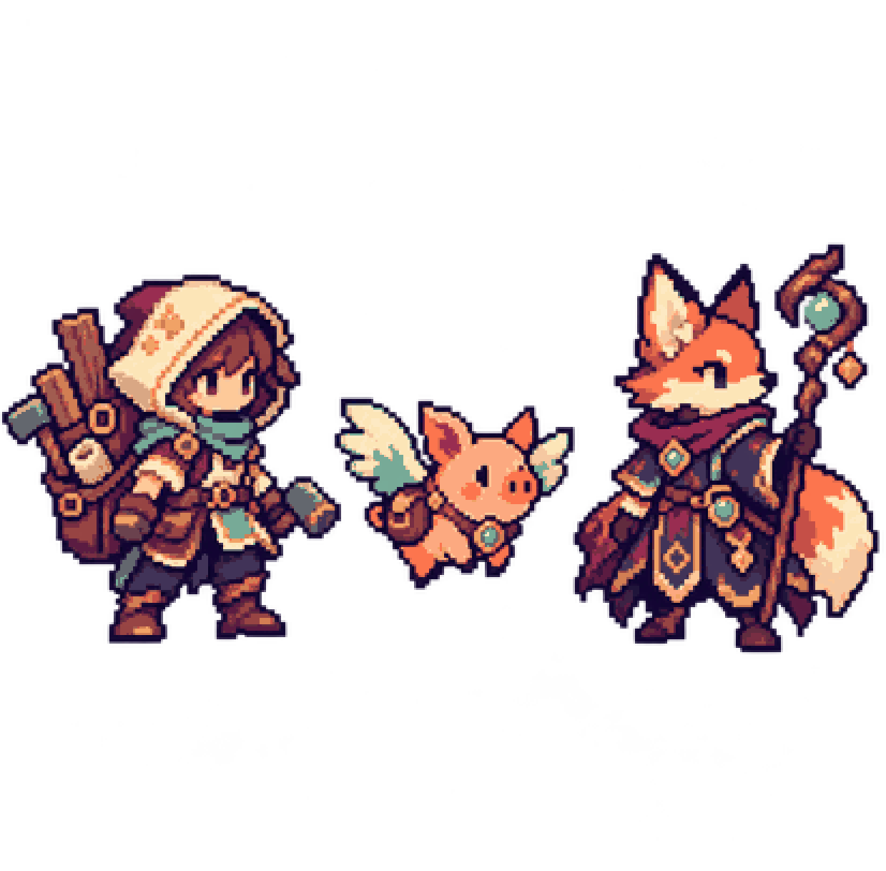

Why I built a local MyChart CLI while the portal kept changing
Patient-owned exports, a browser harness, and the boundary between useful automation and sensitive data.
ONLINE · BUILDING IN PUBLIC
I’m Lifan, a staff engineer who builds local-first products, agent systems, and the evaluation loops that make them trustworthy.
Evidence → local control → human review → shipped artifact.
PARTY ROSTER / 003
Every project brings a different companion: a stubborn problem, a useful constraint, and a clearer route home.

QUEST LOG / 001
A local encrypted information broker that gives agents scoped, reviewable data while keeping external submission behind fresh confirmation.
Inspect quest LOCAL-FIRST CLIExport patient-owned MyChart records through a local Chrome/Puppeteer harness.
Inspect quest OPEN SOURCETrack welcome bonuses, annual fees, recurring credits, certificates, and loyalty expirations.
Inspect quest DATA PRODUCTSki and snowboard deal aggregation across North American retailers, with current and historical context.
Inspect quest AUTOMATIONA source-to-podcast framework with reusable stages, audio integrations, publishing, and validation.
Inspect questJOURNAL / FIELD NOTES
Patient-owned exports, a browser harness, and the boundary between useful automation and sensitive data.
A case study in reminders, evidence, and keeping account data out of the product.
What changed after putting a privacy-first export tool in front of a technical audience.
PARTY NOTES / 002
Turn the goal into a check. Inspect failures and evidence. Improve the system. Run the check again before shipping. The point is software that leaves a useful trail for the next person.